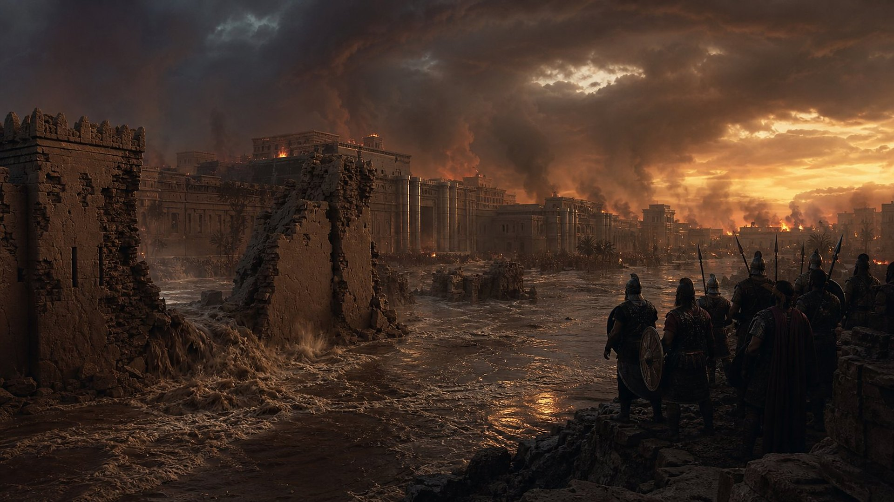
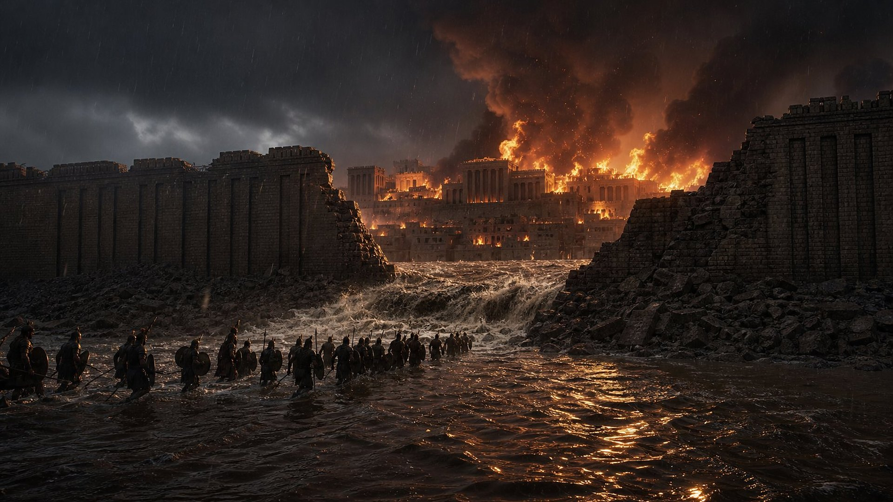
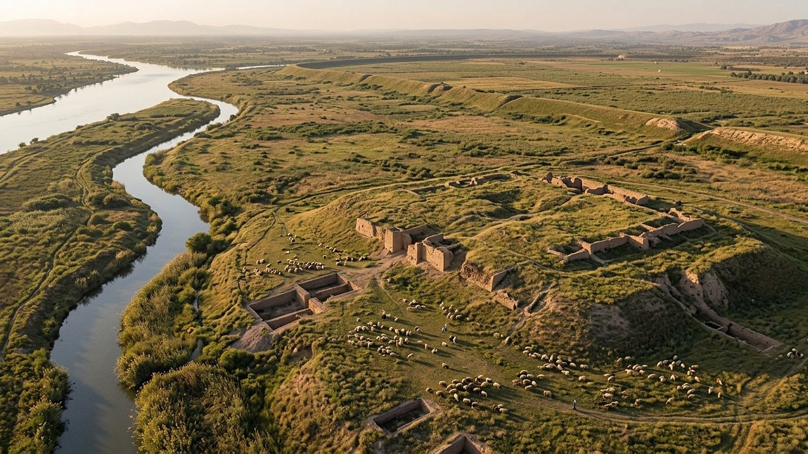
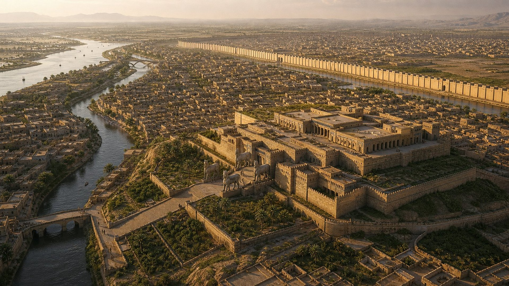
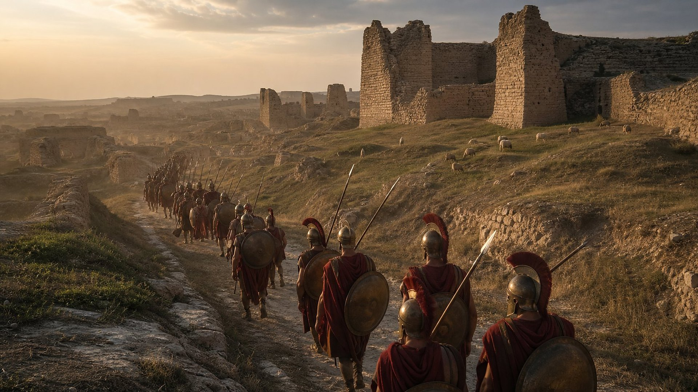
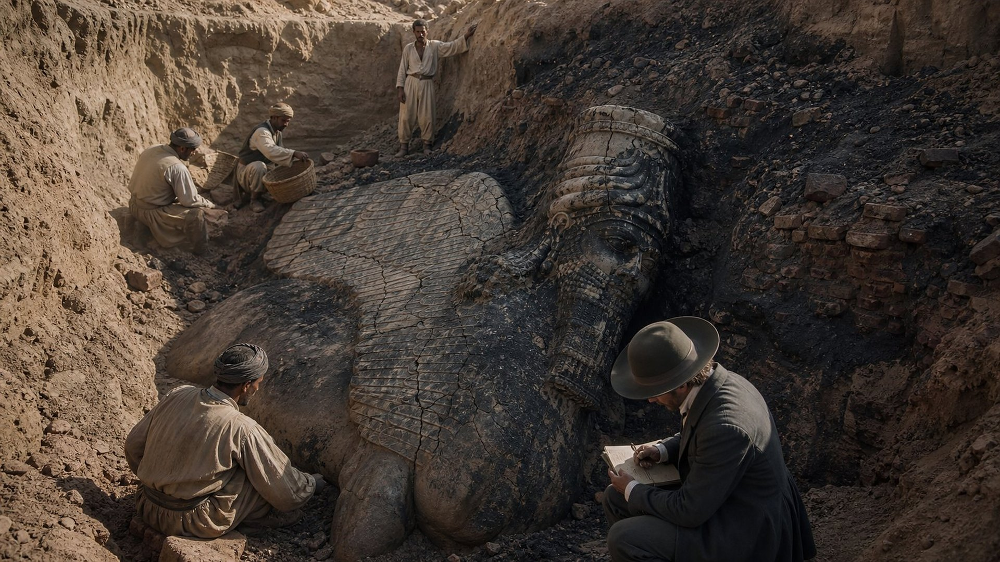
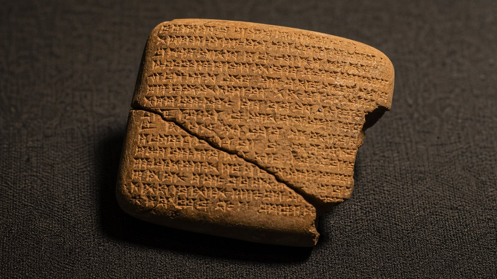

Chronique de la chute de Ninive
An 14 de Nabopolassar (632 selon la chronologie biblique ; 612 pour la plupart des historiens) : Babyloniens et Mèdes assiègent Ninive, la prennent et la changent en ruines.
Notice de référence (site externe)
Salle 04 sur 17
La « ville de sang » si bien effacée qu’au iie siècle on ne savait plus dire où elle se trouvait.
Statut : ACCOMPLIE
L’annonce · avant 648 et avant 632 av. n. è.
Au VIIe siècle avant notre ère, Ninive est la capitale de l’Assyrie, le plus vaste empire que le Proche-Orient ait connu. Sennachérib l’a agrandie et ceinte d’un rempart d’environ 12 kilomètres percé de 15 portes. Sur la colline de Kuyunjik, au bord du Tigre, se dresse son « palais sans rival ».
Ses armées ont soumis l’Égypte jusqu’à Thèbes, la ville que la Bible appelle No-Amon. Ses reliefs montrent des villes rasées et des captifs déportés. Rien ne semble pouvoir l’atteindre.
C’est à ce moment que deux prophètes de Juda annoncent sa fin. Sophonie, sous le règne de Josias, dit que Ninive deviendra « un lieu aride comme un désert ». Nahum décrit le siège, la crue, le feu et le pillage, puis une ville que l’on fuit et que personne ne plaint.
L’oracle touchant Ninive ; livre de la vision de Nahum, l’Elkoshite.
Et il arrivera que tous ceux qui te verront fuiront loin de toi, et diront: Ninive est dévastée ! Qui la plaindra ? D’où te chercherai-je des consolateurs ?
Un siècle plus tôt
Ninive avait déjà reçu un avertissement. Le prophète Jonas y avait proclamé : « Encore 40 jours, et Ninive sera renversée. » Le roi et le peuple prirent l’annonce au sérieux, jeûnèrent et changèrent de conduite. Le jugement fut suspendu.
Ce récit éclaire toute la salle. Une annonce de malheur n’est pas une fatalité : elle laisse une porte ouverte. Si une nation se détourne du mal, la sentence peut être levée. Le Dieu de la Bible prévoit l’avenir, mais il respecte le choix des humains.
Les générations suivantes reprirent la violence que dénonce Nahum, qui l’appelle « la ville de sang ». Cette fois, l’annonce ne laisse plus de délai.
Et Jonas commença à entrer dans la ville, le chemin d’un jour ; et il cria et dit: Encore 40 jours, et Ninive sera renversée.
Et Dieu vit leurs œuvres, qu’ils revenaient de leur mauvaise voie ; et Dieu se repentit du mal qu’il avait parlé de leur faire, et il ne le fit pas.
Au moment où je parle au sujet d’une nation et au sujet d’un royaume, pour arracher, pour démolir, et pour détruire, si cette nation au sujet de laquelle j’ai parlé se détourne du mal qu’elle a fait, je me repentirai du mal que je pensais lui faire.
632 av. n. è. · La chute

Les Babyloniens de Nabopolassar et les Mèdes de Cyaxare unissent leurs forces contre l’Assyrie. Une tablette babylonienne conservée au British Museum, la chronique de la chute de Ninive, raconte la suite avec la sécheresse d’un rapport : les deux armées campent devant la ville, l’assiègent durement pendant trois mois, puis la prennent.
Le roi d’Assyrie meurt. Les vainqueurs « emportèrent le vaste butin de la ville et du temple et changèrent la ville en monceau de ruines ».
Nahum avait annoncé une crue. Un historien grec du Ier siècle avant notre ère rapporte qu’un oracle promettait à Ninive de ne jamais tomber tant que le fleuve ne serait pas devenu son ennemi ; la troisième année du siège, des pluies torrentielles firent déborder le fleuve, qui abattit un pan du rempart. Le musée y voit l’accomplissement des « portes des fleuves » ouvertes.
mais, par une inondation débordante, il détruira entièrement son lieu, et les ténèbres poursuivront ses ennemis.
Les portes des fleuves sont ouvertes, et le palais s’effondre.
Avant · après
Faites glisser la poignée pour passer de Ninive à son apogée au tell de Kuyunjik tel qu’il se présente aujourd’hui. Même point de vue, mêmes cours d’eau.


Annoncé · accompli
Détail 1
« Les portes des fleuves sont ouvertes, et le palais s’effondre. »
Ce qui s’est passé
Selon un récit antique, des pluies torrentielles font déborder le fleuve, qui inonde une partie de la ville et abat un pan du rempart.
Niveau de preuve : DÉBATTU Preuves : PR-022
Détail 2
« Là, le feu te dévorera, l’épée te détruira ; elle te dévorera comme l’yélek. Multiplie-toi comme l’yélek, multiplie-toi comme la sauterelle. »
Ce qui s’est passé
Les fouilles de Kuyunjik révèlent des palais incendiés : reliefs noircis, murs calcinés, tablettes d’argile cuites par le brasier.
Niveau de preuve : FAIT ARCHÉOLOGIQUE Preuves : PR-023
Détail 3
« Pillez l’argent, pillez l’or ! Il n’y a pas de fin au splendide arroi de toute sorte d’objets d’agrément. »
Ce qui s’est passé
La chronique babylonienne le dit en une phrase : les vainqueurs « emportèrent le vaste butin de la ville et du temple ».
Niveau de preuve : FAIT ARCHÉOLOGIQUE Preuves : PR-020
Détail 4
« Et il étendra sa main vers le nord, et il détruira l’Assyrie, et il changera Ninive en désolation, en un lieu aride comme un désert. »
Ce qui s’est passé
En 401 av. n. è., Xénophon passe près de ses ruines désertes sans même connaître son nom ; au iie siècle de n. è., Lucien écrit qu’on ne sait plus où elle était. Aujourd’hui, des moutons paissent sur les collines qui recouvrent ses palais.
Niveau de preuve : DONNÉE HISTORIQUE Preuves : PR-021, PR-025
Détail n° 4

En 401 avant notre ère, l’Athénien Xénophon remonte le Tigre avec l’armée grecque des Dix-Mille. Il décrit deux grandes villes désertes aux murailles colossales, qu’il appelle Larissa et Mespila, et dit que les Mèdes les avaient habitées autrefois. La seconde est Ninive. Il ne connaît même plus son nom.
Au IIe siècle de notre ère, l’écrivain grec Lucien fait dire à l’un de ses personnages : « Ninive a péri depuis longtemps ; il n’en reste pas une trace, et l’on ne saurait même dire où elle était. »
La ville qui disait en son cœur « Moi, et à part moi, nulle autre ! » est devenue, comme l’annonçait Sophonie, un lieu où se couchent les troupeaux.
Et il étendra sa main vers le nord, et il détruira l’Assyrie, et il changera Ninive en désolation, en un lieu aride comme un désert. Et les troupeaux se coucheront au milieu d’elle, toutes les bêtes, en foule ; le pélican aussi, et le butor, passeront la nuit sur ses chapiteaux ; il y aura la voix [des oiseaux] qui chantent aux fenêtres, la désolation sera sur le seuil ; car il a mis à nu les [lambris] de cèdre. C’est là cette ville qui s’égayait, qui habitait en sécurité, qui disait en son cœur: Moi, et à part moi, nulle autre ! Comment est-elle devenue une désolation, un gîte pour les bêtes ? Quiconque passera à côté d’elle sifflera, [et] secouera sa main.
1842-1851 · Fouilles
Pendant des siècles, les voyageurs ne voient en face de Mossoul que deux grandes collines de terre. En 1842, le consul français Paul-Émile Botta sonde la plus grande, Kuyunjik, sans grand résultat. En 1847, l’Anglais Austen Henry Layard y reprend les fouilles pour le British Museum.
Sous la terre, il retrouve le palais de Sennachérib : des dizaines de salles, des kilomètres de reliefs sculptés, des taureaux ailés gardant les portes. Partout, les traces du brasier : des reliefs noircis, des murs calcinés, et des milliers de tablettes d’argile cuites par l’incendie, qui les a paradoxalement conservées. Elles forment aujourd’hui la « collection de Kuyunjik » du British Museum.
Le feu annoncé par Nahum avait laissé sa signature dans le sol.
Là, le feu te dévorera, l’épée te détruira ; elle te dévorera comme l’yélek. Multiplie-toi comme l’yélek, multiplie-toi comme la sauterelle.
Pillez l’argent, pillez l’or ! Il n’y a pas de fin au splendide arroi de toute sorte d’objets d’agrément.


Dossier
Une chronique babylonienne, deux auteurs grecs, une source tardive à manier avec prudence, et deux siècles de fouilles.
An 14 de Nabopolassar (632 selon la chronologie biblique ; 612 pour la plupart des historiens) : Babyloniens et Mèdes assiègent Ninive, la prennent et la changent en ruines.
Notice de référence (site externe)Les Dix-Mille passent près de grandes villes « désertes » (Larissa, Mespila) : il ne cite même plus le nom de Ninive, deux siècles après sa chute.
Notice de référence (site externe)Un oracle disait que Ninive ne serait pas prise « tant que le fleuve ne serait pas devenu l’ennemi de la ville » ; la troisième année du siège, après des pluies abondantes, le fleuve en crue inonde une partie de la ville et abat le rempart sur 20 stades. Récit tardif mêlé de légende (Sardanapale, Arbacès) ; il nomme l’Euphrate au lieu du Tigre.
Notice de référence (site externe)En 1847, Layard s’installe sur le tell de Kuyunjik, face à Mossoul, et y retrouve Ninive : le palais de Sennachérib, ses reliefs et des milliers de tablettes, dont beaucoup ont été cuites par l’incendie de la ville.
Notice de référence (site externe)Historique des fouilles (Botta 1842, Layard 1846-1851, Rassam 1853) et reprise des travaux dans le palais nord d’Assurbanipal ; découverte d’un grand relief du roi annoncée en 2025.
Notice de référence (site externe)« Ninive a péri depuis longtemps ; il n’en reste pas une trace, et l’on ne saurait même dire où elle était. » Citation placée en exergue de l’ouvrage collectif Nineveh, the Great City (Leyde, 2017).
Notice de référence (site externe)Questions fréquentes
La ville se repentit et Dieu suspendit le jugement (Jonas 3:10). Une annonce de malheur est souvent un avertissement : si le peuple change de conduite, la sentence peut être levée (Jérémie 18:7, 8). Plus d’un siècle plus tard, Nahum et Sophonie annoncent une ruine définitive, et cette fois elle arrive.
Le livre parle de la chute de No-Amon (Thèbes d’Égypte) comme d’un événement récent et de Ninive comme d’une puissance encore debout. Sophonie, lui, écrit sous le règne de Josias, bien avant la fin de l’Assyrie. Annoncer en ce temps-là la disparition de la capitale du plus grand empire du monde n’avait rien d’évident.
C’est exact : de modestes établissements, puis des villages, se sont installés sur une partie des ruines, et la grande ville de Mossoul, née sur l’autre rive du Tigre, entoure aujourd’hui le site. Mais Ninive, capitale d’empire, n’a jamais été rebâtie : son nom même s’était effacé, et il a fallu les fouilles du xixe siècle pour retrouver ses palais.
Le musée suit la chronologie biblique : Jérémie 46:2 situe la bataille de Karkemish dans la 4e année de Joïakim, ce qui place la prise de Ninive, environ sept ans plus tôt, en 632. Les historiens, qui datent autrement les règnes babyloniens, retiennent 612. Le décalage est le même que pour la chute de Jérusalem (607 ou 587/586). Il ne change rien aux faits : la ville a bien été prise et ruinée par les Babyloniens et les Mèdes.